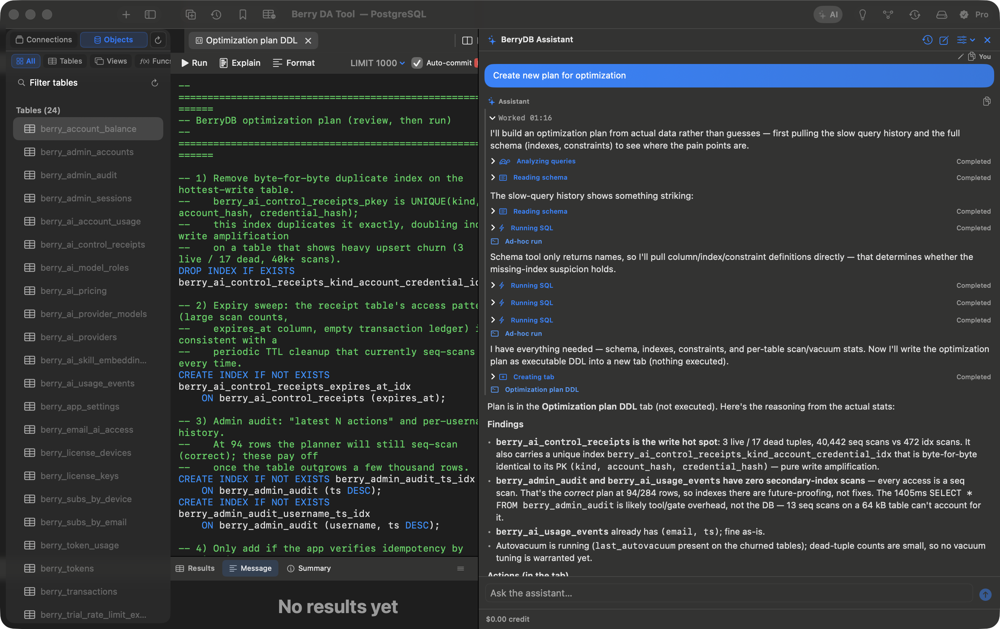

Sub-second launch, streaming 1,000,000+ rows without growing memory, built-in AI SQL Copilot, and Apple Keychain Enclave security. Zero Electron bloat.

Natural language to SQL, optimize slow joins
Hardware encrypted credentials & SSH tunnels
Engineered with modular driver packages conforming to strict performance suites.
v12-16+, Citus, Cockroach
Native Driver8.4+ caching_sha2
KILL GuardFile, Memory, WAL mode
libsqlite3 C-DirectT-SQL, Azure SQL
Full SchemasKey-Value, Hashes, TTL
Live ExplorerOLAP Big Data Streams
Planned — contributions welcomeParquet & Analytics
Planned — contributions welcomeEmbeddings & Payloads
Vector SearchJSON Indices & Cluster
Cluster StatusPrivate VPC & Key Auth
Zero LeakExplore the exact interfaces and tools built into BerryDB.
Unlike web-view based clients that freeze when fetching large datasets, BerryDB utilizes pure AppKit NSTableView view reuse. Load 1,000,000 rows with instantaneous sorting, filtering, inline editing, and binary image inspection.
Built strictly with Swift 6 and AppKit — zero Electron bloat, zero background memory hogging.
Every query executes in an isolated Actor thread. Heavy analytical queries never freeze your UI or block query editor typing.
Accidentally ran a heavy Cartesian join? Stop it immediately using native pg_cancel_backend and MySQL KILL QUERY sockets without disconnecting your session.
No Chromium rendering engine, no embedded Node.js runtimes. Keep dozens of database connections open without draining your MacBook's battery.
Passwords, connection URLs, and SSH keys are encrypted with hardware-level security via the Apple Keychain Enclave. Zero plain-text config files.
Type-ahead completions for schemas, tables, columns, aliases, and SQL keywords. Auto-formatting with 1-click customizable dialect rules.
Cryptographically signed with Ed25519 signatures. Get new database drivers and performance patches with a 1-click background restart.
Real measurements on Apple Silicon M3 Pro (macOS 14.5).
| Metric / Feature | BerryDB | Legacy Cross-Platform | Java / JVM Tools | Generic macOS Tools |
|---|---|---|---|---|
| Cold Launch Time | < 150 ms (Instant) | ~2,400 ms | ~5,800 ms (Java JVM) | ~350 ms |
| Idle Memory Usage | 48 MB | 280 MB | 850 MB+ | 95 MB |
| 1M Rows Virtual Scroll | 60 FPS Smooth | Laggy / Truncates | Out of Memory (OOM) | 55 FPS |
| AI SQL Copilot | Built-in Native | No | Plugin required | Paid Addon |
| Technology Stack | Swift 6 + AppKit | C++ / Qt | Java / Eclipse SWT | Objective-C / Swift |
| Credential Storage | Apple Keychain Enclave | Custom Cipher | Plaintext / Master Pass | macOS Keychain |
Click any screenshot below to inspect detailed typography, data layouts, and modal inspectors.
Multi-tab query editor, connection tree hierarchy, and live status bar.
Inline cell edits, foreign key links, and rapid column sorting.
Turn natural speech questions into syntactically valid relational SQL.
Configure Bastion hosts, port forwarding, and SSL certificates.
Design columns, foreign keys, and indexes with instant DDL generation.
Visual stage costs, node execution times, and index hit metrics.
Never lift your fingers off the keyboard while navigating schemas and executing queries.
Run active query block or highlighted SQL statement immediately.
Search tables, switch connections, and jump to procedures instantly.
Generate execution node tree and diagnose slow index scans.
Auto-indent keywords, joins, and nested subqueries cleanly.
Open a clean SQL scratchpad connected to current active database.
Send kill signal immediately to release server backend locks.
Free to download and explore. Built for developers who value instant responsiveness, battery life, and zero bloat.